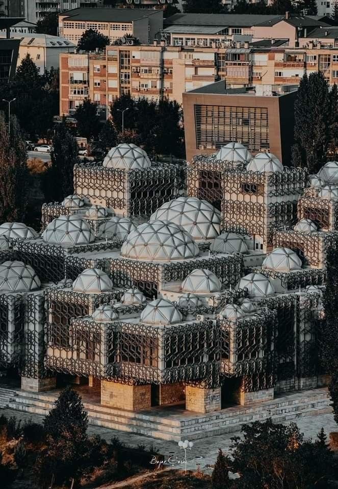
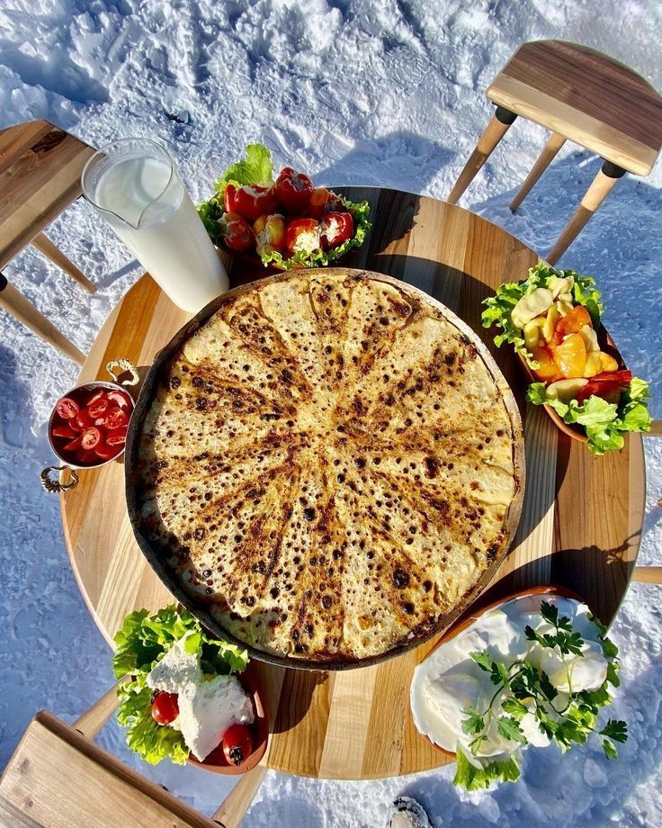

Explore Kosovo’s Rich Culture

Architecture & Heritage
Kosovo’s architectural gems range from the medieval Prizren Fortress to exquisite Ottoman mosques and ancient monasteries. These landmarks narrate centuries of resilience, faith, and artistic expression.

Food & Cuisine
Savor the authentic flavors of Kosovo with dishes like Flija, Pite, and Baklava. Food here is more than nourishment — it’s a celebration of family, tradition, and community.

Handicrafts & Traditions
Handmade rugs, intricate embroidery, and traditional crafts showcase the creativity and dedication of Kosovo’s artisans, preserving cultural heritage through generations.